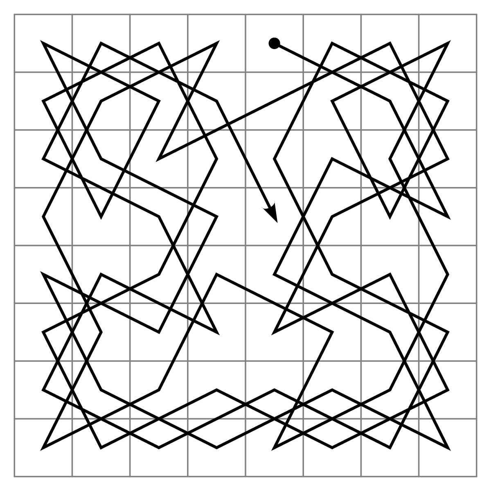
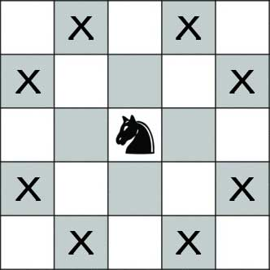
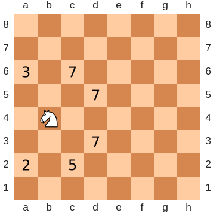

The Knights Tour and The Warnsdorf Heuristic
By Jaime NufioWhat is the Knights Tour?
A Knight's Tour is a path that visits every tile of a chessboard, exactly once, composed of only legal moves a Knight can make. There are two types of Knights Tour: an open tour, one that starts an ends on different, and closed tours, those start and end on the same tile. They are examples of Hamiltonian path, and Hamiltonian cycle, respectively. Read more about them here.
How does a Knight Move?
A knight has exactly 8 legal moves, shaped like an 'L', from its starting position. In Chess, a Knight may pass-over, or "jump" other pieces, but that isn't important for now. Read more about them here.
Warnsdorf Heuristic
The Warnsdorf Heuristics is a problem solving technique for any graph. In mathmatical terms, each move is made by looking at adjacent vectors with the least degree. In other words, the general idea is to move based on how many possible moves exist in the next stage, favoring the next move with the least possible future moves. Because of this, a recursive implementation was ideal. Read more about the Heuristic here.
Try it yourself!
Click anywhere on the board to spawn an open Knight's Tour instance.